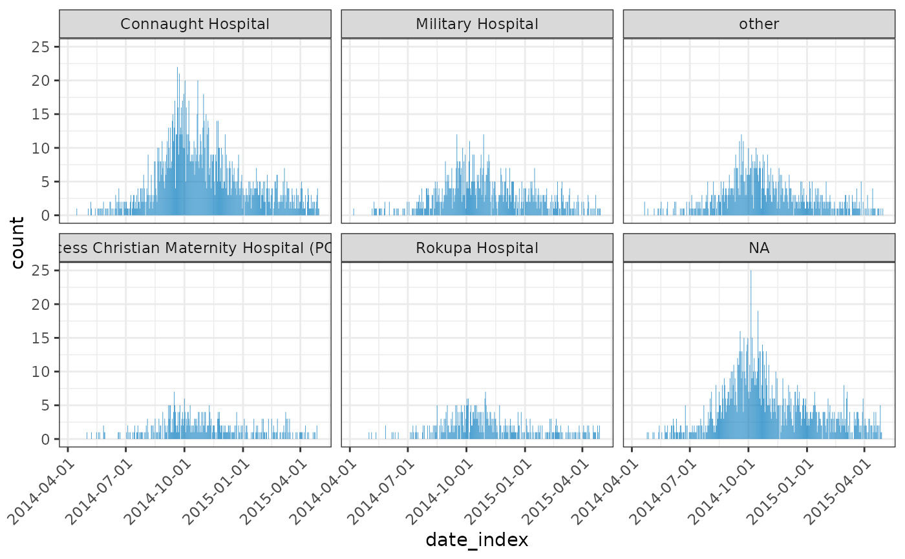

incidence2 includes two plotting functions to simplify graph creation.
# S3 method for incidence2 plot( x, count = NULL, fill = NULL, stack = TRUE, title = NULL, col_pal = vibrant, alpha = 0.7, color = "white", xlab = "", ylab = NULL, n_breaks = 5, show_cases = FALSE, border = "white", na_color = "grey", legend = c("right", "left", "bottom", "top", "none"), angle = 0, size = NULL, ... ) facet_plot(x, ...) # S3 method for incidence2 facet_plot( x, count = NULL, facets = NULL, stack = TRUE, fill = NULL, title = NULL, col_pal = vibrant, alpha = 0.7, color = "white", xlab = "", ylab = NULL, n_breaks = 3, show_cases = FALSE, border = "white", na_color = "grey", legend = c("bottom", "top", "left", "right", "none"), angle = 0, size = NULL, nrow = NULL, ... )
Arguments
| x | An |
|---|---|
| count | Which count variable to have on the y-axis. If NULL (default)
the first entry returned from |
| fill | Which variable to color plots by. If NULL no distinction if made for plot colors. |
| stack | A logical indicating if bars of multiple groups should be stacked, or displayed side-by-side. Only used if fill is not NULL. |
| title | Optional title for the graph. |
| col_pal | col_pal The color palette to be used for the groups; defaults
to |
| alpha | The alpha level for color transparency, with 1 being fully opaque and 0 fully transparent; defaults to 0.7. |
| color | The color to be used for the borders of the bars; NA for
invisible borders; defaults to |
| xlab | The label to be used for the x-axis; empty by default. |
| ylab | The label to be used for the y-axis; by default, a label will be generated automatically according to the time interval used in incidence computation. |
| n_breaks | n_breaks the ideal number of breaks to be used for the x-axis labeling |
| show_cases | if |
| border | If show_cases is TRUE this represents the color used for the
borders of the individual squares plotted (defaults to |
| na_color | The colour to plot |
| legend | Position of legend in plot. |
| angle | Rotation angle for text. |
| size | text size in pts. |
| ... | other arguments to pass to |
| facets | Which variable to facet plots by. If NULL will use all group_labels of the incidence object. |
| nrow | Number of rows. |
Value
facet_plot()andplot()generate aggplot2::ggplot()object.
Details
plotcreates a one-pane graph of an incidence object.facet_plotcreates a multi-facet graph of a grouped incidence object. If the object has no groups it returns the same output as a call toplot().If the
incidence()object has a rolling average column then that average will be overlaid on top.
Examples
if (requireNamespace("outbreaks", quietly = TRUE) && requireNamespace("ggplot2", quietly = TRUE)) { withAutoprint({ data(ebola_sim_clean, package = "outbreaks") dat <- ebola_sim_clean$linelist inci <- incidence(dat, date_index = date_of_onset, interval = 7, groups = hospital) inci2 <- incidence(dat, date_index = date_of_onset, interval = 7, groups = c(hospital, gender)) plot(inci) plot(inci, fill = hospital) plot(inci, fill = hospital, stack = FALSE) facet_plot(inci) facet_plot(inci2) facet_plot(inci2, facets = gender) facet_plot(inci2, facets = hospital, fill = gender) }) }#> > data(ebola_sim_clean, package = "outbreaks") #> > dat <- ebola_sim_clean$linelist #> > inci <- incidence(dat, date_index = date_of_onset, interval = 7, groups = hospital) #> > inci2 <- incidence(dat, date_index = date_of_onset, interval = 7, groups = c(hospital, #> + gender)) #> > plot(inci)#> > plot(inci, fill = hospital)#> > plot(inci, fill = hospital, stack = FALSE)#> > facet_plot(inci)#> > facet_plot(inci2)#> > facet_plot(inci2, facets = gender)#> > facet_plot(inci2, facets = hospital, fill = gender)